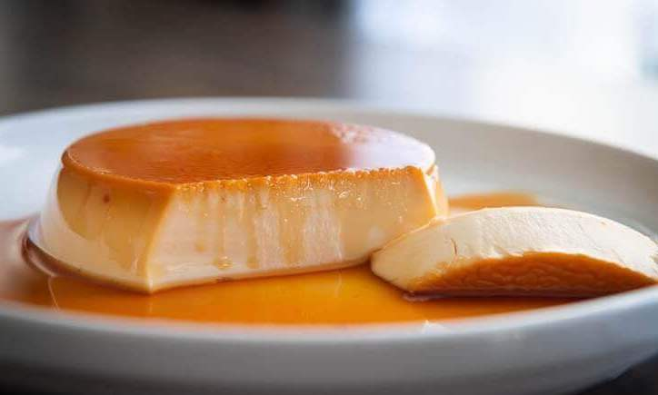

No Steam Leche Flan

Description
Flan is a custard dessert known for its milky, sweet taste and the spongey, gelatin-like texture. It is made with milk, eggs, and a whole lot of sugar.
Ingredients
Flan:
- 2 pieces egg
- 1/2 ounce unflavored gelatin powder (uncolored)
- 7.6 ounces all-purpose cream
- 6 tablespoons sugar
- 1 1/4 cup evaporated milk
- 1/4 cup water
- 1 teaspoon vanilla extract
Caramel:
- 2 1/2 tablespoons water
- 8 tablespoons granulated white sugar
Steps
- Make the caramel by combining sugar and water in a saucepan. Apply heat. Continue cooking while stirring until the mixture thickens and the color turns medium brown. This is now the caramel.
- Pour the caramel into separate molds. (Note: you may use glass, metal, or ceramic baking pans as molds for the flan. Using ramekins is also a good idea.) Tilt the mold to spread caramel evenly. Set aside.
- Start making the flan by cracking the eggs into the bowl. Beat using a wire whisk. Gradually add sugar. Continue beating until mixture gets well blended. Set aside.
- Microwave 1/4 cup the water for 35 seconds. Combine powdered gelatin and water. Mix well by stirring. Set aside.
- Pour milk into a pan. Apply heat until it goes into a simmer. (Note: do not apply too much heat. We want the milk to only be below boiling point).
- Scoop around 5 to 6 tablespoons of warm milk (1 tablespoon at a time) into the bowl with sugar and eggs. Continue to stir the mixture. (Note: This process is also known as tempering. Two ingredients with different temperatures are gradually combined in order to slowly rise to the same temp.)
- Pour the mixture from the bowl into the pan. Continue stirring until well blended.
- Gradually add gelatin mixture while stirring. Continue cooking in low heat for 1 minute. Turn off heat.
- Transfer mixture back to the bowl. Add all-purpose cream and vanilla extract. Stir until well blended. Remove bubbles by skimming.
- Pour the flan mixture into the molds. Cover each mold with aluminum foil or plastic wrap. Refrigerate overnight.
- Serve for dessert. Share and enjoy!
Nutritional Information
Calories: 472kcal (24%) Carbohydrates: 52g (17%) Protein: 10g (20%) Fat: 26g (40%) Saturated Fat: 16g (80%) Cholesterol: 99mg (33%) Sodium: 115mg (5%) Potassium: 286mg (8%) Sugar: 50g (56%) Vitamin A: 986IU (20%) Vitamin C: 2mg (2%) Calcium: 247mg (25%) Iron: 1mg (6%)